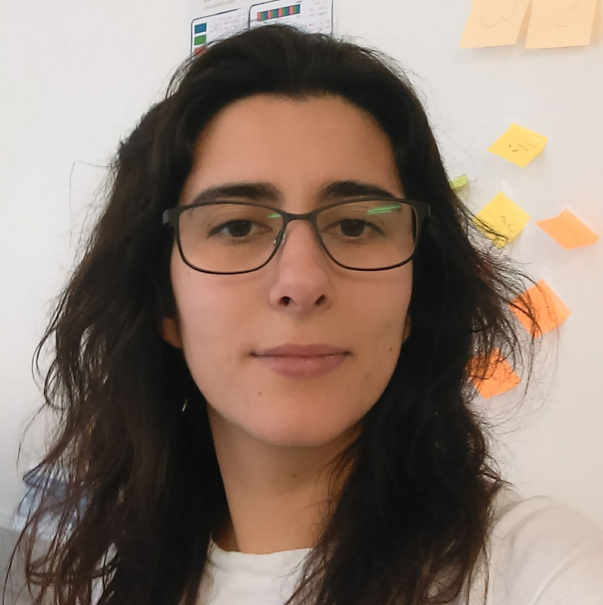

I am a Research Assistant/PhD student in the Department of
Computing at Imperial College London, supervised
by Professor Sophia
Drossopoulou, and working for the the
UpScale Project.
I completed my BSc (2011) and my MSc (2013) in the Department
of Informatics of University of Lisbon, Portugal. I was a
student member of GLOSS/LaSIGE, where I did my master thesis,
under the supervision
of Professor Vasco
T. Vasconcelos. Previously, I also worked for
the Metanet4U project under
the supervision of
Professor António Branco, in the NLX group.
Currently interning at Microsoft Research Cambridge.
Currently interning at Microsoft Research Cambridge.